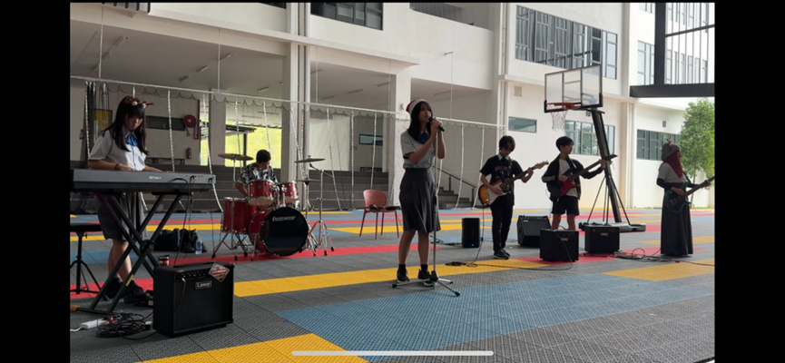
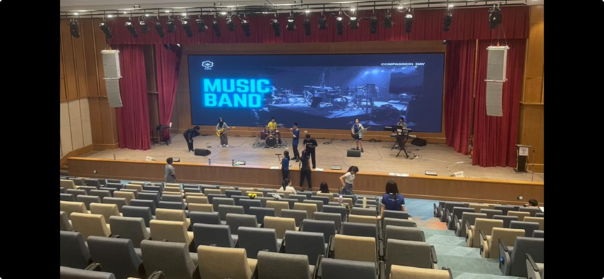

Get to know Hiking Club
The Hiking Club provides students with outdoor experiences that promote physical endurance,
environmental awareness, and teamwork.
Members learn safe hiking practices, develop leadership and communication skills, and engage in
meaningful reflection while enjoying nature responsibly.
Activity Day, Time, Venue & Advisor
Day: Monthly (or once every two months if needed)
Time: Varies depending on hike schedule
Venue: Designated outdoor trails and nature sites
Advisor: School Teachers (supervision ratio maintained for safety)
Learning Objectives / Goals
- Develop an appreciation for nature and the outdoors
- Learn basic hiking knowledge, safety awareness, and risk management
- Build physical endurance and mental resilience
- Strengthen teamwork, leadership, and communication skills
- Practice responsibility, self-management, and respect for the environment
Suitable Students & Why You Should Join
The Hiking Club is suitable for students who enjoy outdoor activity, are willing to participate
responsibly, and seek physical and personal growth.
Students with medical conditions must obtain parental consent, and teachers will assess suitability for
each hike. Joining the club develops resilience, environmental awareness, teamwork, and safe outdoor
habits.
What skills will you gain?
- Physical & Practical Skills: Fitness, stamina, posture, pacing, equipment handling, navigation awareness
- Safety & Life Skills: Risk awareness, weather assessment, first-aid basics, emergency response
- Personal & Social Skills: Teamwork, leadership, communication, self-discipline, resilience
Activities we do
1. Pre-Hike Sessions
School-based preparation covering hiking rules, safety, first-aid awareness, equipment checks, and
environmental ethics.
2. Guided Hikes
Warm-ups, supervised hiking, observation tasks, teamwork challenges, and reflection breaks.
3. Post-Hike Reflection
Group discussion, sharing experiences, lessons learned, and feedback for improvement.
Safety & Supervision
- Adequate teacher supervision at all times
- Attendance and headcount before, during, and after hikes
- Emergency contact information carried by staff
- Clear stop/cancel criteria for weather, health, or safety concerns
Future Development
- Review club size and activity frequency based on student participation
- Introduce progressive hiking levels (beginner to intermediate)
- Explore leadership roles for senior students
- Expand outdoor learning components when appropriate
Photos of previous activities and achievements

